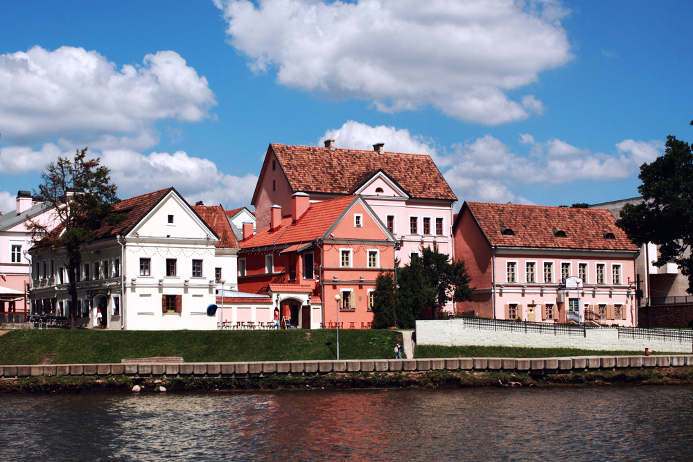

<!DOCTYPE html>
<html lang="en">
<head>
    <meta charset="UTF-8">
    <meta http-equiv="X-UA-Compatible" content="IE=edge">
    <meta name="viewport" content="width=device-width, initial-scale=1.0">
    <title>Document</title>
</head>
<body>
    
    <div style="display: flex; justify-content: space-evenly
    ;" id="box1"></div>
    <div id="id1" style="text-align:center ;"></div>

<script>

images = [
    {pic: "red.jpg" ,
    text: "Костел "},
    {pic: "troi.jpg" ,
    text: "Троицкое"},
    {pic: "mir.jpg" ,
    text: "Мир"}
    ]
n = 1
s = ""
for (i=0; i<images.length; i++)
{ 
    s += `<div> <h3>
    ${images[i].text}</h3></div>`
n++

console.log(s)

}
box1.innerHTML = s

let l =  document.getElementsByTagName ("h3")
for (index of l)
index.style.cssText = 'text-align:center; color:maroon; font-size:16px'

function change1() {
id1.innerHTML= `<div> 
    <p>В храме святого Симеона и святой Елены находится полномасштабная копия Туринской Плащаницы.
  </p></div>`
    
}
function change2() {
id1.innerHTML= `<div> 
    <p>Троицкое предместье — исторический район города Минска, расположенный в северо-восточной части исторического центра на левом берегу реки Свислочь.
  </p></div>`
    
}
function change3() {
id1.innerHTML= `<div> 
    <p>Построенный в начале XVI в. магнатом Ю. И. Ильиничем замок стал первым частнособственническим замком на землях Белоруссии
  </p></div>`
    
}


</script>


</body>
</html>